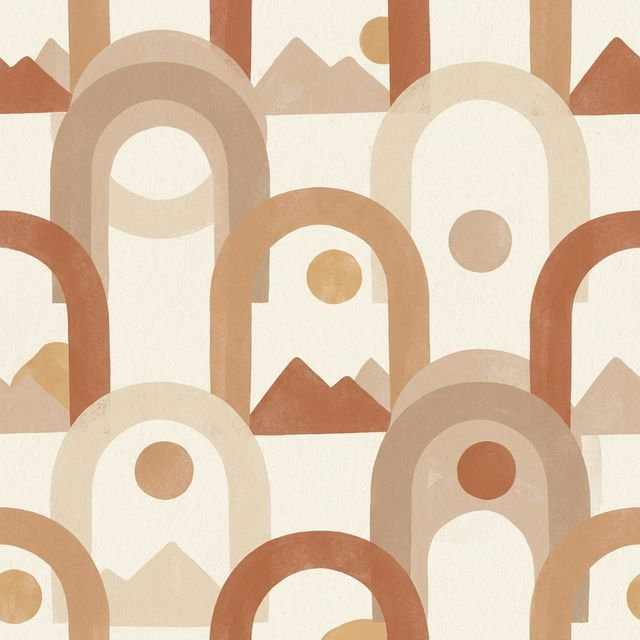

Desert Mirage
February 2026A minimalist pattern inspired by the shifting sands and warm terracotta tones of the desert landscape.
A minimalist pattern inspired by the shifting sands and warm terracotta tones of the desert landscape.
Tracing the lines of a map, this navy and beige design represents the paths we travel and the mountains we climb.
Soft shapes interacting in a fluid dance, capturing the essence of natural movement and calm.
Clean lines and gold accents on a beige canvas, symbolizing structure, clarity, and modern elegance.

The colors of the sky were unreal as the sun dipped below the mountains. A moment of pure tranquility in the busy city.

Trying the most amazing tacos from a small street vendor. The flavors were explosive and the atmosphere was electric.

After a 6-hour hike, we finally reached the summit. The view was worth every step. Here is the story of the climb.